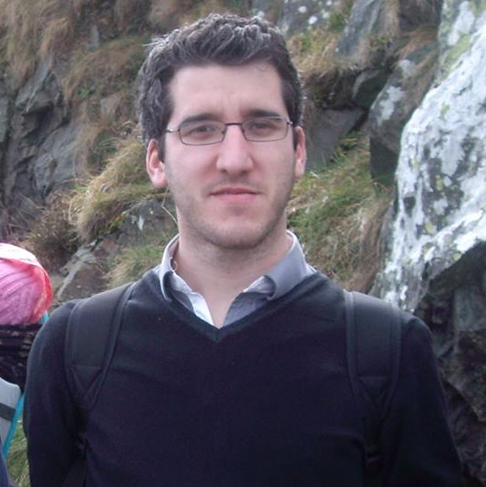

Welcome to my personal page giving visibility to my professional activities and hobbies!
I have been a researcher in the DATA-IA entity at Orange Labs Belfort since 2014. My research focuses on the use of knowledge engineering in different application contexts:
I hold a PhD (2014) from the University of Burgundy and the University College Dublin. My work focused on the application of knowledge engineering techniques to facilitate the construction and analysis of incident timelines in the field of computer forensics.
Enjoy your visit!
My CV is available here